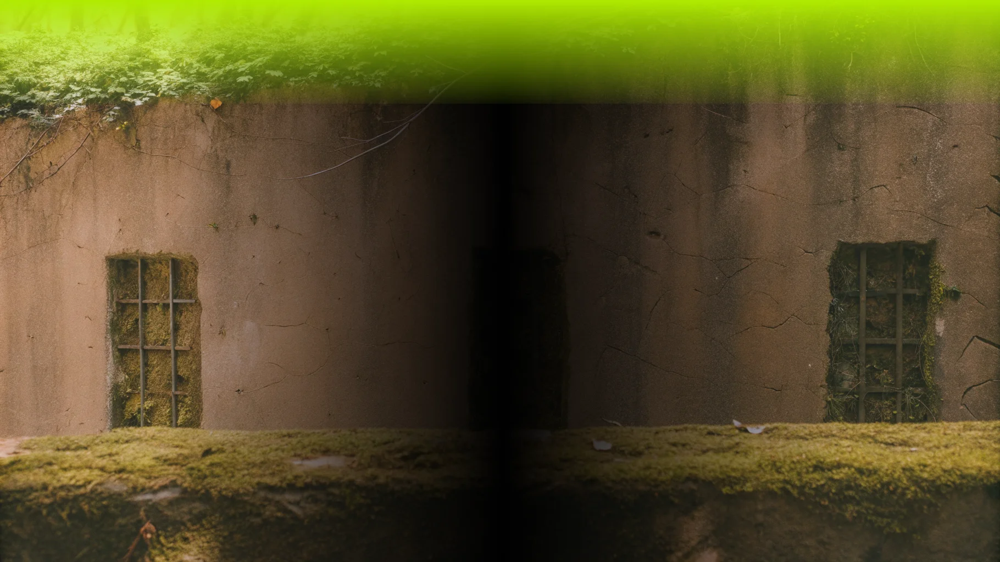

Как читать природные сигналы в повседневной жизни: советы для тех, кто хочет лучше понимать природу
1. Наблюдайте за животными
Животные часто чувствуют изменения в окружающей среде раньше, чем люди. Например, птицы могут лететь в сторону, противоположную приближающемуся шторму, а рыбы могут менять свое поведение перед цунами.
2. Следите за растениями
Растения также дают важные сигналы. Например, если деревья начинают сбрасывать листья раньше срока, это может указывать на приближающуюся засуху.
3. Обращайте внимание на облака
Облака могут предупреждать о погодных изменениях. Например, круг вокруг солнца может сигнализировать о приближающемся дожде или снеге.
4. Слушайте звуки природы
Звуки природы, такие как гром или шелест листьев, могут предупреждать о надвигающихся погодных явлениях.